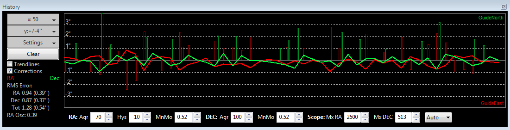
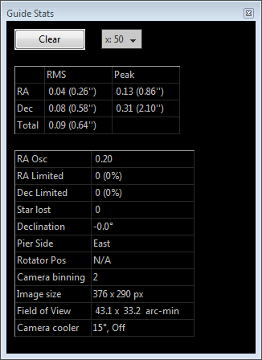
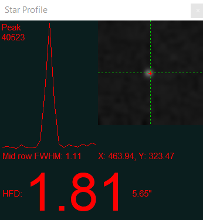
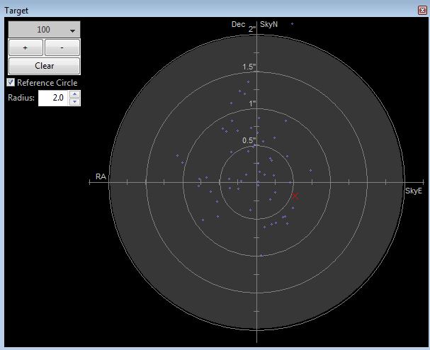
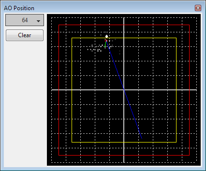

监测工具
PHD2提供多种监测与显示工具，帮助你了解导星表现。所有工具都可以从“查看（View）”下拉菜单打开，具体说明如下。
叠加图层
最简单的显示工具，是叠加在导星主画面上的网格。它们很直观，包括以下选项：
- 同心圆靶标
- 细网格
- 粗网格
- 赤经/赤纬（RA/Dec）——显示望远镜坐标轴相对于相机传感器坐标轴的方向。它也直观说明，没有必要刻意将相机轴与赤经、赤纬方向对齐，这样做不会带来好处。
- 光谱仪狭缝/狭缝位置——为光谱用户在主画面叠加光谱仪狭缝图形。可调整其大小、位置与角度，使之匹配光学配置。
- 无
在“查看”菜单中点击相应叠加选项，选择适合自己的图层即可。导星曲线
导星曲线是判断导星表现的有力工具之一，你很可能会逐渐依赖它。下图是一个典型示例：

窗口的大部分区域从左至右绘制每次导星曝光测得的星点位移。通常，一条线表示赤经位移，另一条表示赤纬位移。也可以通过左侧“设置（Settings）”按钮切换为相机 X/Y 轴，但不推荐这样做。“设置”还可以切换角秒或相机像素单位，并更改两条曲线的颜色。纵轴范围由从上向下第二个按钮控制，示例中标为 y:+/-4″。横轴范围，也就是显示多少次导星曝光，由最上方按钮控制，示例中为 x:50。此范围同时决定左下方统计量所用的样本数。这些统计值显示每个轴的运动均方根（RMS，或标准差），以及两轴合成值。它们是评估导星表现的最佳指标，因为可以直接与星点大小和视宁度比较。“RA Osc（赤经振荡）”表示当前赤经移动方向与上一次相反的概率。这是从原始 PHD 继承的统计量，用途有限。如果它一直高于 0.5，可能是最小移动量过低，导致追逐视宁度。左侧还有两个复选框可以帮助评估表现。勾选“修正（Corrections）”后，会在曲线上叠加实际发送给赤道仪的导星指令，显示发送时刻、方向及幅度。示例中，它们是沿时间轴不规则出现的红色和绿色竖线，可用来观察导星有多“忙”。理想情况下，赤纬轴应该有较长一段时间完全不需要修正。另一个复选框“趋势线（Trendlines）”会叠加两轴的趋势，帮助判断星点是否整体持续漂移。它主要用于漂移法对极轴，其中赤纬趋势线尤其重要。赤经趋势线则可揭示跟踪速率是否持续偏慢或偏快，也可能反映挠曲影响，有助于设置自定义跟踪速率。选择单方向赤纬导星时，赤纬趋势线同样有用。外部摄影程序发出抖动指令时，曲线上相应时间段会标注“抖动（dithering）”，提醒你这段位移受到抖动操作影响。RMS 统计不包括抖动及稳定等待期间的大幅偏移。
导星曲线还会显示与导星指令对应的方向，如示例中的 GuideNorth 和 GuideEast。观察整体漂移、决定单方向赤纬导星设置时，这些标记很有帮助。它们表示星点偏离锁定位置的方向。例如赤纬位置在图中向上移动，表示星点在传感器上向“北”漂移，需要向南导星脉冲使其回到锁定位置。类似地，赤经位置向下漂移表示星点在传感器上向“东”移动，需要向西脉冲。设置单方向赤纬导星时，可按以下规则：
赤纬曲线向上漂移 ⇒ 赤纬导星模式选择“南（South）”。
赤纬曲线向下漂移 ⇒ 赤纬导星模式选择“北（North）”。
受赤道仪和硬件因素影响，这些方向不一定与天空中的真实方向一致，尤其是赤纬方向；这不影响上述用法。
建议使用角秒而不是像素观察导星表现。这样可以不依赖具体设备、焦距或成像比例尺来评估结果。为此，需要向PHD2提供足够的信息来计算导星成像比例尺：导星镜焦距、相机像元尺寸，以及使用的像素合并等级。使用新建配置向导，是确保这些设置正确的最佳办法。
曲线底部提供可即时调整导星参数的控件，具体显示哪些控件取决于所选算法。其作用与“大脑”高级设置对话框中的参数相同，不必停止导星或切换窗口就能调整。虽然这些控件很显眼，但导星时大幅修改它们通常没有帮助。改善导星一般需要记录较长时间的数据，再用 PHD2 LogViewer 仔细分析。表现不佳通常源于操作设置错误、赤道仪机械问题或所承载设备的移动。盲目修改导星参数解决不了这些问题，反而往往使情况变差。
统计

如果希望监测导星表现，但不想打开曲线窗口，可以选择“统计（Stats）”。这里显示主要统计量，并提供清除数据、调整统计所用曝光次数的控件。跟踪统计与曲线工具相同，也排除了抖动及稳定等待的影响。该窗口还可用于确认像素合并设置、监测导星相机温度，并快速查看导星相机视场大小。星点轮廓与靶图

星点轮廓显示导星星点的截面，并测量其半高全宽（FWHM）和半通量直径（HFD）。HFD 通常是更稳定的星点大小指标，因为它不需要曲线拟合，也不要求假定星点的整体形状。如果 HFD 大幅波动或轮廓形状不断剧烈变化，可能说明星点过暗、曝光过短、相机失焦或视宁度不佳。该工具有助于导星相机调焦，尤其是在使用离轴导星器或小寻星镜时；这些设备的调焦可能相当繁琐。为便于调焦，HFD 以大号字体显示，你可以在远处操作导星镜或相机时看清它。将星点轮廓窗口取消停靠并放大，直到能轻松读取 HFD。如果一开始严重失焦，图中可能只有少数模糊星点，选择其中清晰可见且最小的一颗。尽量使用至少 2 秒曝光，避免追逐视宁度，同时不要让星点饱和而出现明显平顶。然后调整焦点，使 HFD 持续减小；一旦它开始增大或不再下降，就停止调整。此时星点可能已饱和，应改选视场中更暗的星。由于焦点已有改善，通常能看到更暗的星点。重复这个过程，直到可用的最暗星点达到最小 HFD。每次调整后应观察数帧，在心里平均掉视宁度变化。失焦是初学者的常见问题，会导致校准异常或导星不佳。也可使用巴赫蒂诺夫调焦板，或 SharpCap 等其他程序帮助调焦。通常仅凭主画面中的星点外观，无法达到精确焦点，需要测量辅助。导星期间，可以用星点轮廓工具确认星点没有平顶、没有饱和，并像上例那样逐渐收尖。窗口足够大时，还会显示星点质心的带小数 X/Y 坐标。

靶图是另一种直观观察整体导星表现的方式。红色 X 表示最近一次曝光的星点位移，蓝色点表示近期历史。左上角控件可以放大、缩小，并改变历史点数。如果主赤道仪或辅助赤道仪通过 ASCOM 连接，PHD2 还会显示星点运动对应的 SkyNorth、SkyEast 方向，如上例所示。这有助于判断整体漂移，并决定单方向赤纬导星的设置。图中的上下方向约定与相机安装方向或视场中的实际东南西北移动无关。自适应光学（AO）图

AO 图类似靶图，但显示相对于自适应光学设备坐标轴的修正历史。红色矩形表示 AO 的行程边界，内部黄色矩形表示需要推动赤道仪回中的“bump”区域。如果星点移到黄色矩形以外，PHD2就会向赤道仪发送一系列移动指令，也就是 bump，将导星星点平稳地移回中心附近。此时，绿线和蓝线分别显示已执行的增量移动和剩余移动。白点表示 AO 当前位置，绿圈表示平均位置；执行 bump 时圆圈会变为红色。左上角按钮控制绘制多少个历史点。可停靠、可移动的图形窗口
这些监测窗口首次显示时，都会停靠在主窗口内。它们按一定尺寸排列，并与主窗口的两条边对齐，完全包含在PHD2主窗口边界之内。你也可以拖动所需窗口的标题栏，将其移出并调整大小，以便更清楚地观察图中细节。要重新停靠，只需把标题栏拖到希望停靠的大致区域，如底部或右侧。稍作练习，就能将窗口放到最方便的位置。
“查看”下拉菜单中还有一项，名为“恢复窗口位置（Restore window positions）”。点击后，所有可停靠、可移动的窗口都会自动恢复到默认停靠位置。例如切换不同分辨率的屏幕后，有些窗口移到了看不见的位置，这个功能就很有用。它还会把 PHD2 主窗口恢复为默认尺寸，并放到屏幕左上角附近。